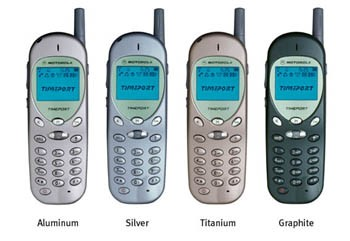
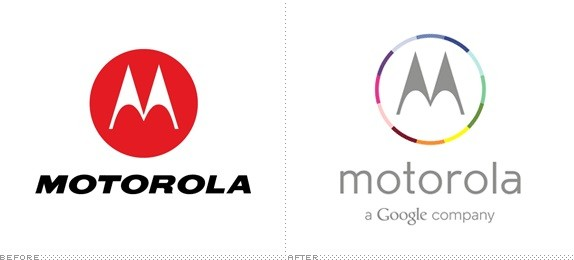
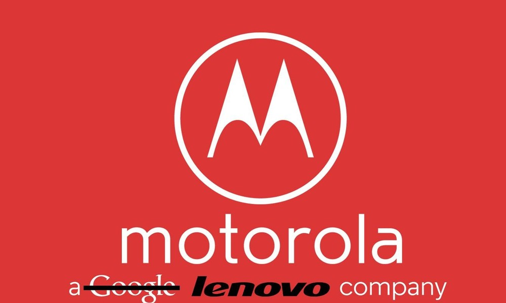

O início da Motorola
A companhia que hoje conhecemos como Motorola foi fundada em Chicago pelos irmãos Paul e Joseph Galvin, no dia 25 de setembro de 1928. A empresa possuía na época o nome de Galvin Manufacturing Corporation, devido ao sobrenome da família de seus fundadores, e contava com apenas cinco funcionários. Mesmo com o número baixo de mão de obra, a GMC foi capaz de desenvolver um produto chamado eliminador de pilhas, que permitia que os rádios a pilha funcionassem conectados à corrente elétrica residencial padrão. O primeiro sucesso comercial da empresa aconteceu somente em 1930 com o lançamento de um rádio para automóvel, prático e de preço acessível. Paul criou o nome da marca do rádio automotivo (Motorola), unindo as palavras “motor” (em alusão ao movimento) e “ola” (como referência ao som, como em vitrola, por exemplo). Dessa forma, a marca Motorola remetia à ideia de som em movimento, nome perfeito para o novo produto. Ainda nos anos 30, outros produtos foram colocados no mercado, sempre com inovações importantes. Em 1936, a empresa ingressou no mercado de rádios domésticos e começou a fornecer o primeiro sistema de “rádio patrulha” (chamado de Motorola Police Cruiser), que nada mais era que um rádio AM ajustado em uma só frequência para receber transmissões da polícia. Foi nos anos 40 que a empresa ganhou maior impulso, com diversos lançamentos interessantes, como o primeiro rádio portátil bidirecional destinado ao Exército dos Estados Unidos, que se tornou um ícone das frentes de batalha na Segunda Guerra Mundial. Além disso, a Motorola foi a inventora do primeiro sistema portátil bidirecional de radiocomunicação em FM, o famoso Handie-Talkie, introduzido em 1943 e que muitos consideram o avô do celular. Pesando 15.9 quilos, o rádio walkie-talkie tinha alcance de 16 a 32 quilômetros.
O nascimento da Motorola Inc.
Com o sucesso cada vez maior dos seus produtos da linha Motorola, a empresa resolveu assumir o nome e se reinventar, começando a se chamar Motorola Inc. em 1947. A semente de toda competência da empresa em microeletrônica foi lançada em 1949, quando Dan Noble criou o centro de pesquisa e desenvolvimento na cidade de Phoenix, estado americano do Arizona, destinado à explorar o potencial do transistor, cuja invenção havia sido anunciada um ano antes. Em 1955 a empresa revolucionaria o setor de comunicações com o lançamento do Pager no mercado. Em 1958, a Motorola lançou o Motrac, o primeiro rádio bidirecional veicular do mundo com receptor e fornecimento de energia totalmente transistorizado. Seu baixo consumo de energia permitia que o rádio funcionasse sem precisar ligar o motor do veículo. Era uma inovação e tanto para a época. Pouco depois, em 1959, a grande sensação do mercado de eletrônica de consumo seria o lançamento do primeiro rádio portátil de bolso totalmente transistorizado, batizado de X11. Na década de 1960, sob o comando de Robert Gavin, filho do fundador, a empresa começou a expandir-se internacionalmente, focando-se no mercado de produtos eletrônicos para o consumidor final. Foi nesta década que a empresa introduziu, em 1967, o primeiro televisor totalmente transistorizado da América, chamado Quasar. A marca ganhou destaque mundial quando um transponder (repetidor de radiofrequência) produzido pela empresa retransmitiu as primeiras palavras da Lua para a Terra em julho de 1969. O transponder a bordo do módulo lunar Apollo 11 transmitiu sinais de televisão, telemetria, rastreamento e comunicações por voz entre a Terra e a Lua.
Seu primeiro telefone celular
A fase mais importante da empresa teria início em 1973, quando apresentou um aparelho de comunicação móvel voltado para o consumo em massa: o telefone celular. Pouco depois, em 1977, foi colocado em teste um sistema radiotelefônico batizado de “celular”. O nome era uma homenagem às células de curto alcance do sistema. Isto culminaria, em 1983, depois de 15 anos de intensas pesquisas e investimentos de US$ 100 milhões no desenvolvimento da tecnologia móvel celular, com a comercialização do primeiro sistema de celular da empresa, chamado DynaTAC. Nesta década a Motorola se especializou na produção de telefones celulares, culminando com o lançamento de um dos produtos de maior sucesso nesse segmento, em 1996, quando introduziu no mercado o famoso telefone StarTAC, então menor e mais leve aparelho de celular do mundo. A companhia também participou ativamente da revolução nas comunicações com o primeiro padrão técnico de televisão de alta definição totalmente digital (HDTV), em 1990. Nesta década, a Motorola também demonstrou o primeiro protótipo de telefone com sistema de celular digital em funcionamento do mundo, usando o padrão GSM (Global System for Mobile Communications) em Hanover, Alemanha, no ano de 1991.
Anos 2000
Em junho de 2000, a Motorola e a Cisco Systems forneceram a primeira rede de celular comercial General Packet Radio Service (GPRS) do mundo para a BT Cellnet, no Reino Unido. O sistema também funcionou no primeiro telefone celular GPRS do mundo, o modelo Timeport P7389i da MOTOROLA. Desde então, a velocidade com que a companhia evoluiu na oferta de tecnologia de qualidade e inovações para seus clientes só acelerou. No dia 4 de janeiro de 2011 ocorreu a separação oficial da Motorola em duas companhias, ambas com ações negociadas publicamente na Bolsa de Valores: MOTOROLA MOBILITY, focada em negócios com celulares, acessórios, tablets e decodificadores de TV; e MOTOROLA SOLUTIONS, focada em negócios que incluem escâner de código de barras, redes sem fio e rádios intercomunicadores. Apesar de atuarem como empresas separadas, as duas continuaram ostentando o mesmo nome e partilhando direitos de autor e patentes. A divisão da tradicional empresa em duas ocorreu porque investidores há muito vinham pressionando pela separação, para que pudessem optar entre a área de celulares, que atravessa rápido crescimento, mas com desempenho volátil, e a área de soluções, que apresenta desempenho estável, mas muito mais lento. A empresa também anunciou uma nova linha de aparelhos. Entre os produtos, estavam vários smartphones Android capazes de se conectar com as redes de telefonia de quarta geração e o aguardado tablet Xoom, primeiro aparelho no mercado com uma versão do sistema operacional Android otimizada para o formato. Além disso, a marca desenvolveu para os aficionados por fitness, o MOTOACTV™, um revolucionário sistema que combina um personal trainer e um DJ em um único dispositivo extremamente leve, e pode ser considerado um precursor dos smartwatches. 
Motorola by Google
Em 15 de agosto de 2011 a Google anunciou a compra da MOTOROLA MOBILITY, divisão da empresa americana responsável pela fabricação de celulares, por US$ 12.5 bilhões. Com a aquisição, o Google, que sempre foi uma empresa de software, passou a ser também um dos grandes fabricantes de hardware para celulares do mundo. Mas talvez a razão por trás da compra seja simples: com a MOTOROLA MOBILITY, o Google incorporou 17 mil patentes a seu portfólio atual que ainda é pequeno. Além disso, a aquisição permitiu ao gigante virtual controlar a fabricação de aparelhos que utilizam seu sistema operacional para smartphones Android. Depois de ser comprada, em agosto de 2013 lançou seu primeiro smartphone desde sua venda para o Google, o tão aclamado Moto X, que conta com uma tela de 4,7 polegadas um hardware intermediário, mas que consegue um desempenho até mesmo superior ao de muitos tops de linha de outras marcas.

Motorola by Lenovo
Em 29 de janeiro deste ano, porém, a Google anunciou em seu blog oficial um acordo de venda da Motorola, entregando a marca para a asiática Lenovo, com um cheque assinado de US$ 2,9 bilhões - aproximadamente R$ 7 bilhões. O valor era bem abaixo dos US$ 12 bilhões negociados em 2011, valor que entregava também uma enorme quantidade de patentes e que ficam com o Google.
Esta venda foi resultado de diversos trimestres fiscais em que a divisão da Motorola rendeu prejuízos para a gigante das buscas, sendo mais viável manter apenas o portfólio de patentes e passar a responsabilidade pela fabricação de aparelhos para outra companhia.
O futuro da Motorola é incerto, porém vemos que a empresa tem um histórico impressionante, que pode muito bem levantá-la e fazer com que volte a ser uma das maiores fabricantes do mundo.
